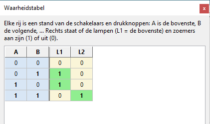

Une table de vérité montre, pour chaque position des interrupteurs, quelles lampes sont allumées.
Logic fait cette table lui-même : il met les interrupteurs et boutons-poussoirs de votre panneau dans chaque
position, l’une après l’autre, et regarde quelles lampes et quels buzzers s’allument.

La table de vérité du demi-additionneur de la leçon 26 : L1 (la lampe rouge, somme)
est allumée pour 01 et 10, L2 (la lampe ordinaire, retenue) seulement pour 11.
L1, L2 … (jaune clair) sont les lampes (ordinaires ou de couleur), aussi de haut en bas ; B1, B2 … sont les buzzers, R1 … les relais et relais de commutation.
Un moteur (M1 …) affiche L (tourne à gauche), R (à droite) ou 0 (arrêté). Un afficheur (D1 …) montre son chiffre ; - signifie éteint (pas d’alimentation).
Le générateur d’impulsions, l’interrupteur de fin de course et les composants de LogicRun (personne, chariot …) ne sont pas pris en compte : ils dépendent du temps ou d’un programme. L’interrupteur DIP, la LDR et la CTN à bornes n’ont pas de colonne non plus : ils restent comme vous les avez réglés.
Un 1 signifie allumé, un 0 éteint. Une sortie allumée devient verte.
Chaque ligne est une position. Avec 2 interrupteurs il y a 4 lignes, avec 3 interrupteurs 8 lignes ; la table accepte jusqu’à 6 interrupteurs (64 lignes).
Avec Copier, vous mettez la table dans le presse-papiers, pour la coller dans un traitement de texte ou
un tableur. Une fois la table faite, les interrupteurs reviennent à leur position.
Attention : une table de vérité convient aux circuits avec des
portes : les sorties y dépendent seulement de la position actuelle des
interrupteurs. S’il y a une bascule, un compteur ou un autre composant
avec une mémoire sur le panneau, la sortie dépend aussi de ce qui s’est passé avant. Logic vous prévient alors,
et la table ne vaut pas toujours.
Essayez
Faites la table de vérité de la leçon 4 (porte ET), de la leçon 5
(porte OU) et de la leçon 26 (demi-additionneur), et comparez-les avec les tables de
Traitement.